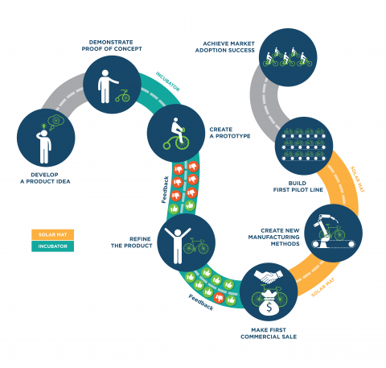

The SunShot Technology to Market funding program brings highly impactful solar energy technologies and solutions to the marketplace through technology research, development, and demonstration that overcomes technical, institutional, and market challenges. Historically, annual funding opportunities have been separated by stage of technology development (Incubator, SolarMaT, and SUNPATH). For the first time, these funding opportunities have been combined into a single funding opportunity with the goal of bringing disruptive innovation to the solar industry in the near term that will take root in the U.S. These awards were announced on November 16, 2015. Read the press release.

Approach
As the SunShot Initiative approaches the 2020 goal of $0.06 per kilowatt hour (kWh) for the total installed cost of solar energy systems, an entirely new set of challenges begins to arise. SunShot is partnering with American businesses to bring products and solutions to market that achieve cost goals and solve the next set of challenges preventing the universal use of solar power. By doing so, a plateau in solar deployment can be avoided, resulting in continually expanding solar deployment.
Objectives
The Technology to Market program funds for-profit entities that are developing products and solutions that will reduce the cost of solar energy and de-risk the integration of solar energy into the electricity grid. These solutions cover hardware innovation and manufacturing, software, cost-reductions throughout the value chain, and capability-related solutions. They are expected to aid in making solar energy accessible to everyone in the U.S. and provide a clear path for these highly impactful technologies and solutions to rapidly reach market success.
Awardees
Applied Materials
Location: Santa Clara, CA
Amount Awarded: $5,067,147
Awardee Cost Share: $4,999,900
Project Summary: Producing silicon wafers in bulk can be costly due to the significant waste associated with typical wafer production processes. This project seeks to reduce silicon waste—or kerf loss—and simplify the wafer production process. The team will produce kerfless substrates using epitaxial silicon growth over a porous-silicon template. Under a current Energy Department-funded project, the team has developed an epitaxial chemical vapor deposition (CVD) reactor to produce silicon wafers via epitaxial growth and lift-off. This project will scale the laboratory process for the high volume production of kerfless epitaxial-silicon substrates.
Amtech Systems, Inc.
Location: Tempe, AZ
SunShot Award Amount: $930,664
Awardee Cost Share: $236,000
Project Summary: Amtech is developing a low-cost field-effect passivation technology in partnership with the Georgia Institute of Technology. It uses a novel, concept-proven method of charge introduction into a surface passivation film to improve cell efficiency in advanced c-Si solar cells and ultimately reduce the cost of the electricity. The key objective of this project is to optimize this technology, including passivation film stacks and cell structures, in order to maximize the charging effect and the charge reliability. This project is expected to further the commercialization of the technology while introducing new equipment to the solar industry.
Aurora Solar, Inc.
Location: Palo Alto, CA
SunShot Award Amount: $400,000
Awardee Cost Share: $100,000
Project Summary: Aurora will be developing a web-based application that quickly and precisely calculates the solar potential of a building’s roof. The results of this application will increase the ability of solar firms to accurately assess large volumes of potential sites and will increase their closing rates.
CelLink Corporation
Location: San Carlos, CA
SunShot Award Amount: $2,500,000
Awardee Cost Share: $2,500,000
Project Summary: CelLink is developing a flexible conductive backplane that will provide module manufacturers with efficiency gains and a reduction in manufacturing cost per watt. Through proprietary fabrication techniques and advanced materials, CelLink's conductive backplanes are much more conductive, larger, lighter, and less expensive than traditional flexible circuits. These attributes are uniquely suited to the needs of rear-contact solar modules and other power electronics applications.
Certain Solar
Location: Boston, Massachusetts
Amount Awarded: $490,390
Awardee Cost Share: $122,600
Project Summary: Certain Solar applies big data analytics, behavioral economics, and modern portfolio theory to reduce solar soft costs and improve solar bankability. Through its SunShot Incubator award, Certain Solar is developing a first-of-its-kind finance technology that quantifies and forecasts risks stemming from uncertainty in future energy prices. Certain Solar will create a new method for allocating financial risks and will demonstrate this technology through a pilot project.
Cogenra Solar, Inc.
Location: Fremont, CA
SunShot Award Amount: $5,499,551
Awardee Cost Share: $5,499,555
Project Summary: Cogenra Solar will develop and demonstrate a first-of-its-kind 50 megawatt per year PV module manufacturing line based on the company’s innovative Dense Cell Interconnect (DCI) technology, which rewires the PV module. The approach increases module output power by reducing metal shading, eliminating gaps between cells, and decreasing resistance, resulting in a lower module price per watt. Higher efficiency also reduces balance of system and installation costs. DCI eliminates module degradation associated with ribbons and solder joints and significantly increases lifetime power output, which further reduces the levelized cost of energy. Cogenra has already proven these unit operations through a very successful ongoing SolarMat 2 project. This project will broaden the technology to mainstream PV applications.
Concurrent Design, Inc.
Location: Austin, TX
SunShot Award Amount: $1,000,000
Awardee Cost Share: $250,000
Project Summary: The Energy Switch is a device that will clear the path for widespread adoption of residential microgrids that feature solar plus storage. Installed as the “single point of permitting,” the Energy Switch equips a home for plug-and-play expansion of PV, storage, back-up generation, intelligent load control, and automated islanding. The Energy Switch eliminates redundant components, custom onsite design, and labor costs to simplify the installation of residential microgrids. The Energy Switch works with legacy residential infrastructure and appliances as well as new construction and smart appliances. Concurrent will develop a commercial version of this transformative technology, turning the residential microgrid from a potential problem for the grid operator into a grid-friendly customer endpoint that can integrate seamlessly into any grid operator business model.
EdgePower
Location: Aspen, CO
SunShot Award Amount: $495,248
Awardee Cost Share: $143,000
Project Summary: EdgePower is creating hardware and software to integrate the controllable HVAC and lighting loads of a building with forecast and solar PV production, thereby better matching PV supply with building demand and reducing peak demand at the utility meter. This project will combine site-based solar forecast data from Clean Power Research with forecast and real time net load data on a single commercial building test site. The project will quantify the utility savings of using load control to smooth the commercial PV customer’s net load profile, and also highlight the potential value of integrating forecasting and load control technologies with battery storage.
ENACT Systems Inc.
Location: Pleasanton, CA
SunShot Award Amount: $498,965
Awardee Cost Share: $498,964
Project Summary: ENACT is developing PACE Solar Accelerator, or PSA, an end-to-end platform for automation of sales, operations, design, and financing of projects that leverage Property Assessed Clean Energy (PACE) financing. The PSA platform accelerates sales and financing volumes and reduces the risks and costs associated with origination, underwriting, and overall administration of PACE-backed solar projects. PSA enables developers and PACE program lenders to access the platform and benefit from increased workflow automation, improved operating margins, and more rapid scale-up.
ENACT Systems Inc.
Location: Pleasanton, CA
SunShot Award Amount: $449,671
Awardee Cost Share: $185,889
Project Summary: ENACT is developing an end-to-end, operational workflow analytics platform to further expedite sales and installation of solar PV projects. Adding workflow analytics enables solar developers and installers to gain ‘live’ functional guidance during project sales and delivery, leveraging data analytics that reduce human error and adding insights that help decision-making. The end result will be to provide business process automation and benchmarking for all critical workflow steps for both residential and commercial solar installations.
Folsom Labs
Location: San Francisco, CA
SunShot Award Amount: $296,000
Awardee Cost Share: $301,925
Project Summary: Folsom Labs will develop a software-based Solar Permit Generator – a software engine that automatically generates many of the standard documents that inspectors and AHJs require for solar arrays in their jurisdiction. This software will leverage much of the system design information already included in HelioScope, a design and engineering software platform offered by Folsom Labs. HelioScope is already used by hundreds of installers for preliminary engineering and proposal stages of projects, and the natural next step is to take the designs generated in HelioScope and extend them to permit documents. By doing so, this project will help all U.S. solar installers work more effectively, while also bringing down the installed cost of solar. Each solar array will require fewer man-hours, and will have fewer opportunities for human errors. This will also reduce the turnaround time to deploy solar arrays, helping solar developers increase their throughput and improve their profitability.
GeoCF LLC
Location: Austin, TX
SunShot Award Amount: $773,500
Awardee Cost Share: $773,500
Project Summary: GeoCF’s Smart Power Maps solution is a comprehensive software platform for utility-scale solar project evaluation and development. Smart Power Maps gives solar developers, utilities, and investors the ability to bring large-scale solar projects to market faster with lower cost of capital. Users can comprehensively evaluate tens of thousands of potential projects simultaneously and manage project development for the best sites through all stages of development. By streamlining and combining the financial modeling and geographic constraints analysis steps of the due-diligence process, the tool cuts weeks from project timelines for initial screening and can reduce project development costs significantly.
Halo Industries, Inc.
Location: San Mateo, CA
SunShot Award Amount: $1,000,000
Awardee Cost Share: $256,359
Project Summary: Halo Industries will use precise applied forces for the cleaving of silicon ingots leading to the ability to fabricate silicon sheets and wafers with any desired thickness. This new technique can drastically lower the price of these silicon products by eliminating the large kerf losses in traditional production with a low cost, high throughput process that can manufacture wafers of thickness ranging from 10 µm to 200 µm and above. This breakthrough will revolutionize the silicon photovoltaics industry by reducing material costs and enabling a new generation of devices that can directly compete with all other energy sources on an economic basis that does not require government subsidies.
kWh Analytics
Location: San Francisco, CA
SunShot Award Amount: $599,974
Awardee Cost Share: $600,022
Project Summary: About 35% of American citizens hold “non-prime” FICO scores < 680, which restricts their ability to take on a solar lease, power purchase agreement (PPA), or loan that has enabled tens of thousands of other “prime” citizens to go solar. Given the uniquely attractive nature of solar assets, kWh Analytics believes that there is a tremendous opportunity to use data analytics to prove that FICO is merely a contributing factor, rather than the only factor, that influences customer repayment. kWh Analytics will create the solar industry’s largest database of financial payment history for solar leases, PPAs, and loans, similar to what kWh Analytics has already done for solar energy production data under Incubator 8. kWh Analytics will also identify other key sources of data that could impact likelihood of repayment and integrate with those sources where possible. This data set will serve as a crucial pre-requisite for developing a statistically significant, independent understanding of how to safely underwrite solar in a way that also expands the total addressable market. Underwriting ratings and the underlying data can then be licensed to solar firms as a profitable service.
Nevados Engineering, Inc.
Location: San Francisco, CA
SunShot Award Amount: $773,124
Awardee Cost Share: $193,281
Project Summary: Nevados Engineering is creating a single axis tracker to help solar developers build projects on lands that are raised and uneven. By creating a terrain-agnostic solution, the single axis tracker will enable developers to use land that typically would not be considered, creating more site options, eliminating major construction costs, and increasing power generation.
Picasolar
Location: Fayetteville, AR
SunShot Award Amount: $2,000,000
Awardee Cost Share: $2,000,000
Project Summary: Imperfections in a solar emitter, a critical layer that collects the current-producing charge carriers in a solar cell, causes significant efficiency loss in most of the commercial solar cells. Picasolar’s Hydrogen Super Emitter (HSE) perfects emitters after cells are already made, helping to use less silver, avoid multiple processing steps and disruptions, and improve efficiency gains. The HSE is a one-step, low-temperature process that electrically deactivates 99.5% of the dopants at the surface of the solar cell. This significantly lowers surface recombination, or the charge carrier losses experienced in the surface layer of a solar cell, thus helping to make the solar cells more efficient. In addition, Picasolar will create a tool that uses this new process and will integrate it into a high volume manufacturing line.
PowerScout, Inc.
Location: Pleasanton, CA
SunShot Award Amount: $1,500,000
Awardee Cost Share: $1,500,000
Project Summary: PowerScout is a cloud-based big data analytics platform for the solar industry designed to disrupt the current paradigm of customer acquisition, thereby catalyzing the exponential growth of distributed solar energy resources. PowerScout’s objective is to deliver a decrease in customer acquisition costs in order to decrease the levelized cost of energy. PowerScout has brought together a team of the best solar credit analysts and sales and marketing minds and empowered them with the ability to drive better sales, marketing, and underwriting decisions with large scale data-analysis and machine learning. Consequently, the software platform enables more efficient sales and marketing and more accurate customer underwriting. This in turn extends solar financing options to more customers and removes the cost and time barriers presented by the status quo of a multi-week sales process by empowering residential consumers to acquire fully customized solar power generation systems online in five minutes.
Ra Power Management, Inc.
Location: Oakland, CA
SunShot Award Amount: $500,000
Awardee Cost Share: $125,000
Project Summary: RPM is developing a cloud based software platform that manages the financial and operational functions of third-party financed solar projects throughout their lifecycles. RPM’s software streamlines and automates the sales, financing, and management of a portfolio of solar assets. The software will help solar developers automate the most difficult aspects of asset management, leading to increased transparency, efficiency, and reduction in human error. More importantly, the platform will help developers save money by improving their operating margins. A well designed, scalable, and fully integrated solar management platform is needed in order for third-party financed solar to be widely adopted. With the addition of solar lease securitization, the need is even greater for timely, accurate financial information for investors, auditors, and regulators. The RPM platform offers an all-in-one solution by providing pricing and customer bids plus operational and financial asset management. The RPM platform will drive down the cost of financing and managing solar assets, resulting in a lowered cost of capital and lower energy costs for the end customer.
SafeConnect Solar
Location: Honolulu, HI
SunShot Award Amount: $999,893
Awardee Cost Share: $252,009
Project Summary: SafeConnect Solar is commercializing electronic balance-of-system componentry that allows safer residential PV systems to be installed more quickly. In doing so, it dramatically lowers installation costs, making PV more cost-competitive with utility-provided electricity in existing markets and opening up new ones.
SenSanna Incorporated
Location: Arnold, MD
SunShot Award Amount: $500,000
Awardee Cost Share: $141,526
Project Summary: SenSanna Incorporated has adapted a low-cost, rugged, solid-state technology widely used to filter radio frequency signals in mobile phones to produce multi-sensor systems that operate wirelessly and without batteries to measure a wide range of parameters in harsh environments. This project will develop a prototype sensor system for wireless measurement of temperature, voltage, current, and relative phase on distribution grid power lines and transformers. Current limits on connecting PV sources to the grid can be raised or eliminated without destabilizing the grid through the use of widespread cost-effective distributed wireless monitoring systems that enable operators to understand grid conditions on a local level, analyze stresses introduced by PV fluctuations, and develop local energy storage and control strategies.
Sistine Solar, Inc.
Location: Cambridge, MA
SunShot Award Amount: $1,000,000
Awardee Cost Share: $250,000
Project Summary: Sistine Solar has developed a patent-pending technology called SolarSkin to create solar panels of absolutely any color, shade, or pattern. This low-cost, scalable technology can open up the residential rooftop market in the US to the 25 million households that are part of homeowner associations (HOAs). HOAs often have restrictive covenants that prevent, or make it time consuming and expensive, for homeowners to install solar due to perceived insufficient aesthetics. This technology removes this barrier by making the solar blend in with rooftops while still producing energy comparable with mainstream blue/black crystalline solar panels. Further, the technology opens up the possibility of using solar as a branding/advertising asset, generating alternative revenue streams that absent of government subsidies can achieve payback in under 3 years. This can stimulate the commercial solar carport market. The technology can increase market adoption of solar by removing aesthetic barriers at low cost and creating significant new opportunities for local manufacturers and installers.
SolarRetina, LLC
Location: Washington, DC
SunShot Award Amount: $499,894
Awardee Cost Share: $125,000
Project Summary: SolarRetina will fill the information gap and provide distribution grid planners with the certainty they need to integrate large amounts of solar by developing a beta version of the SolarRetina, a tool that provides on-demand, evidence-based analysis of the grid impacts of distributed solar derived from real-life, real-time solar generation data crowd-sourced from customer-sited solar installations. Working with distribution grid planning partners, they will build a commercially-ready beta version of the SolarRetina that will automatically acquire and integrate high-resolution solar data from a network of solar sites, and using that data, will provide superior analysis of the impacts and effects of distributed solar on their partners’ distribution grids. The analysis will provide the precision, realism, and comfort that distribution planners need to remove technical and institutional barriers to ubiquitous deployment.
Sunfield Semiconductor Inc.
Location: Calabasas, CA
SunShot Award Amount: $144,000
Awardee Cost Share: $36,000
Project Summary: Module-Level Monitoring (MLM) can reduce operations and management (O&M) costs in solar power systems by detecting and locating maintenance problems early. MLM is also critical for maintaining the highest system performance over time. MLM requires a means of communication between each solar module and a remote computer or user interface device. Two such means are currently used: radio and Power-Line Communication (PLC). The awardees introduce a third means of communication: low frequency magnetic fields. This is wireless, but not radio. Magnetic fields penetrate non-ferrous conductors like PV cells, rather than being reflected. Also, magnetic fields don't propagate like radio waves do, so magnetic communication (mag com) has very short range, in this case typically less than three feet. Mag com costs less than radio or PLC. Furthermore, mag com may be able to detect and locate series arc faults at a significantly lower cost. Present methods of detecting series arc faults only determine which string contains the fault, but the new method can determine the specific solar module where the arc fault is occurring. This lowers O&M costs by avoiding a time-consuming search for the fault, and getting the system back on line sooner.
SunPower Corporation
Location: Davis, CA
SunShot Award Amount: $681,676
Awardee Cost Share: $1,240,925
Project Summary: Though utility-scale solar has grown in past years, innovation in tools available to project developers and managers has lagged behind. We still rely mostly on humans to manage complex data for decisions ranging from project selection to construction management to operational performance. SunPower sees opportunities to change the way that companies collect, filter, and process data by using a combination of software and hardware automation. The impact of automated tools could lower utility-scale PV system LCOE from balance-of-systems cost savings caused by more intelligent decisions during project design, more efficient deployments, and faster construction. These savings will bring the industry closer to achieving the DOE’s 2020 cost target of 6 cents per kWh.
Sunrun Inc.
Location: San Francisco, CA
SunShot Award Amount: $900,000
Awardee Cost Share: $900,000
Project Summary: Sunrun Inc., in collaboration with Clean Power Research (CPR), will develop and commercialize the first end-to-end system for automatic permit set generation, submission, and approval. This platform will enable residential solar project developers to automatically generate permit sets and allow them to submit these packages electronically to AHJs for review and approval.
UtilityAPI
Location: Oakland, CA
SunShot Award Amount: $762,530
Awardee Cost Share: $1,146,290
Project Summary: UtilityAPI is automating the process of authorizing, collecting, and cleaning electricity data from utilities. Access to standardized data means a larger sales funnel, a frictionless customer journey, and easy data verification for financing for solar.
Learn more about SunShot's other technology to market funding programs.